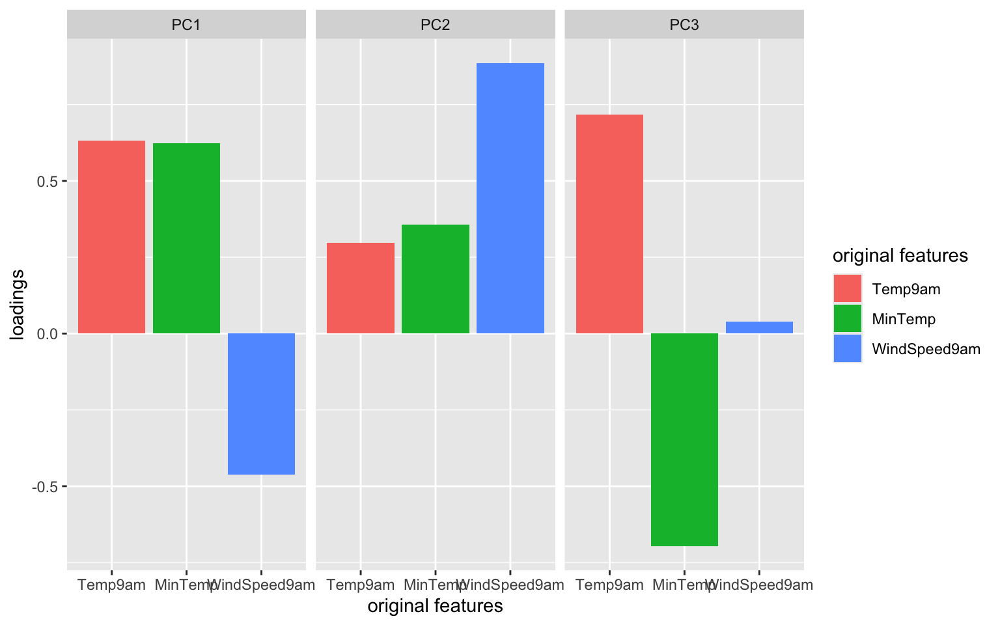
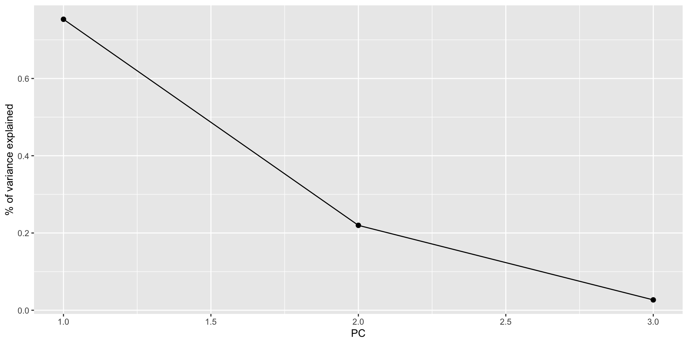
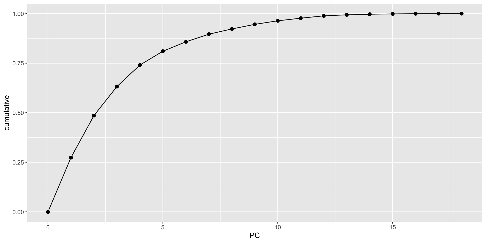

Date Location MinTemp MaxTemp Rainfall
0 0 3285 3085 5930
Evaporation Sunshine WindGustDir WindGustSpeed WindDir9am
109530 118202 15766 15659 16135
WindDir3pm WindSpeed9am WindSpeed3pm Humidity9am Humidity3pm
8668 3842 7254 4351 8329
Pressure9am Pressure3pm Cloud9am Cloud3pm Temp9am
23000 22981 89076 95092 3310
Temp3pm RainToday RISK_MM RainTomorrow
7310 5930 5929 5929 Context

CONTEXT
In unsupervised learning we don’t have any y outcome variable, we’re just exploring the structure of our data. This can be divided into 2 types of tasks:
- clustering
- GOAL: examine structure & similarities among the individual observations (rows) of our dataset
- METHODS: hierarchical and K-means clustering
- dimension reduction
- GOAL: examine & simplify structure among the features (columns) of our dataset
- METHODS: principal components analysis (and many others, including singular value decomposition (SVD), Uniform Manifold Approximation and Projection (UMAP))
DIMENSION REDUCTION MOTIVATION
Especially when we have a lot of features, dimension reduction helps:
- identify patterns among the features
- conserve computational resources
- feature engineering: create salient features to use in regression & classification (will discuss next class)
PRINCIPAL COMPONENT ANALYSIS (PCA)

INSPIRATION
PCA is pretty cool.
Check out this article “Genes mirror geography in Europe” which examined more than 500,000 DNA sites on 3,000 Europeans.
Thus we have high dimensional data with 3,000 rows (n) and 500,000 columns (p), thus p > n. We can capture much of the geographic relationship by reducing these 500,000 features to just 2 principal components!

Small Group Discussion
Recall the Australian weather data from Homework 2 (image: http://toursmaps.com/wp-content/uploads/2017/09/australia-map-google-_0.jpg):
PCA cannot handle missing values.
We could simply eliminate days with any missing values, but this would kick out a lot of useful info.
Instead, we’ll use KNN to impute the missing values using the VIM package.
If your VIM package doesn’t work, import the processed data from here:
EXAMPLE 1: Research goals
Check out the weather_data:
MinTemp MaxTemp Rainfall Evaporation Sunshine WindGustSpeed
Albury 13.4 22.9 0.6 7.4 10.1 44
Newcastle 13.2 27.2 0.0 7.4 13.0 44
Penrith 15.2 32.6 0.0 7.4 10.9 59
Sydney 17.6 31.3 0.0 7.6 10.9 44
Wollongong 9.5 17.9 0.4 6.8 10.1 52
Canberra 13.6 25.2 0.0 9.6 13.0 80
WindSpeed9am WindSpeed3pm Humidity9am Humidity3pm Pressure9am
Albury 20 24 71 22 1007.7
Newcastle 6 19 50 24 1013.9
Penrith 13 22 35 23 1009.1
Sydney 2 24 29 21 1009.1
Wollongong 20 24 52 44 1007.9
Canberra 26 43 31 28 1006.3
Pressure3pm Cloud9am Cloud3pm Temp9am RainTodayNo RainTodayYes
Albury 1007.1 8 5 16.9 1 0
Newcastle 1010.1 3 4 21.8 1 0
Penrith 1007.1 3 4 24.4 1 0
Sydney 1004.6 3 7 24.9 1 0
Wollongong 1003.3 5 5 14.0 0 1
Canberra 1004.4 1 6 19.9 1 0
RISK_MM
Albury 0
Newcastle 0
Penrith 0
Sydney 0
Wollongong 0
Canberra 0Identify a research goal that could be addressed using one of our clustering algorithms.
Identify a research goal that could be addressed using our PCA dimension reduction algorithm.
Solution:
- What cities are similar w.r.t. their weather patterns?
- How can we combine these correlated weather features into a smaller set? (for the purpose of supervised learning, computational efficiency, etc.)
EXAMPLE 2: Starting small
Let’s start with just 3 correlated features: \(x_1\) (Temp9am), \(x_2\) (MinTemp), and \(x_3\) (WindSpeed9am)
The goal of PCA will be to combine these correlated features into a smaller set of uncorrelated principal components (PCs) without losing a significant amount of information.
The first PC will be defined to retain the greatest variability, hence information in the original features. What do you expect the first PC to be like?
How many PCs do you think we’ll need to keep without losing too much of the original information?
Solution:
- We might expect it to be driven by Temp9am and MinTemp which are strongly correlated.
- Maybe 2? PC1 might contain strong info about the temp features and PC2 might contain strong info about wind.
EXAMPLE 3: Defining the PCs
Perform a PCA on the small_example data:
This creates 3 PCs which are each different combinations of the (standardized) original features:
Temp9am MinTemp WindSpeed9am
Albury -0.49164877 -0.10016777 0.5179183
Newcastle 0.25610853 -0.13455372 -1.3350783
Penrith 0.65287772 0.20930578 -0.4085800
Sydney 0.72917948 0.62193718 -1.8645059
Wollongong -0.93419901 -0.77069379 0.5179183
Canberra -0.03383817 -0.06578182 1.3120597 PC1 PC2 PC3
Albury -0.6119817 0.27733759 -0.26182765
Newcastle 0.6944764 -1.15487603 0.22381760
Penrith 0.7312569 -0.09374376 0.30573078
Sydney 1.7089610 -1.21413476 0.01482615
Wollongong -1.3091122 -0.09282229 -0.11200583
Canberra -0.6683498 1.12907017 0.07404101Specifically, these PCs are linear combinations of the (standardized) original x features, defined by loadings a:
\(PC_1 = a_{11}x_1 + a_{12}x_2 + a_{13}x_3\)
\(PC_2 = a_{21}x_1 + a_{22}x_2 + a_{23}x_3\)
\(PC_3 = a_{31}x_1 + a_{32}x_2 + a_{33}x_3\)
And these linear combinations are defined so that the PCs are uncorrelated, thus each contain unique weather information about the cities!

Use the loadings below to specify the formula for the first PC.
PC1 = ___*Temp9am + ___*MinTemp + ___*WindSpeed9am
PC1 PC2 PC3
Temp9am 0.6312659 0.2967160 0.71656333
MinTemp 0.6230387 0.3562101 -0.69637431
WindSpeed9am -0.4618725 0.8860440 0.03999775- For just the first city, confirm that its PC1 coordinate or score can be calculated from its original coordinates using the formula in part a:
Temp9am MinTemp WindSpeed9am
Albury -0.4916488 -0.1001678 0.5179183 PC1 PC2 PC3
Albury -0.6119817 0.2773376 -0.2618276Solution:
- PC1 = 0.6312659 Temp9am + 0.6230387 MinTemp - 0.4618725 WindSpeed9am
[1] -0.6119818EXAMPLE 4: Examining the components of each PC (part 1)
Plots can help us interpret the above numerical loadings, hence the important components of each PC.


Which features contribute the most, either positively or negatively, to the first PC?
What about the second PC?
Solution:
- PC1 is driven primarily by Temp9am and MinTemp (positively) and with contrast to WindSpeed9am (negatively)
- PC2 is driven primarily by WindSpeed9am (positively)
EXAMPLE 5: Examining the components of each PC (part 2)
When we have a lot of features x, the above plots get messy. A loadings plot or correlation circle is another way to visualize PC1 and PC2 (the most important PCs):
- each arrow represents a feature x
- the x-coordinate of an arrow reflects the correlation between x and PC1
- the y-coordinate of an arrow reflects the correlation between x and PC2
- arrow length reflects how much the feature contributes to the first 2 PCs
It is powerful in that it can provide a 2-dimensional visualization of high dimensional data (just 3 dimensions in our small example here)!

Positively correlated features point in similar directions. The opposite is true for negatively correlated features. What do you learn here?
Which features are most highly correlated with, hence contribute the most to, the first PC (x-axis)? (Is this consistent with what we observed in the earlier plots?)
What about the second PC?
Solution:
- Temp9am and MinTemp are highly positively correlated; Windspeed9am seems to have a negative relationship with temperature
- Temp9am and MinTemp primarily contribute to PC1 with a bit of negative contrast with WindSpeed9am
- WindSpeed9am contributes to PC2
EXAMPLE 6: Examining the amount of information captured by each PC (numerical metrics)
Now that we better understand the structures of the PCs, let’s examine the relative amount of information they each capture from the original set of features:
# A tibble: 3 × 5
PC std.dev percent cumulative var
<dbl> <dbl> <dbl> <dbl> <dbl>
1 1 1.50 0.753 0.753 2.26
2 2 0.812 0.220 0.973 0.660
3 3 0.284 0.0268 1 0.0805NOTE:
var= amount of variability, hence information, in the original features captured by each PCpercent= % of original information captured by each PCcumulative= cumulative % of original information captured by the PCs
- What % of the original information is captured by PC1? Confirm using both the
varandpercentcolumns.
What % of the original information is captured by PC2?
In total, 100% of the original information is captured by PC1, PC2, and PC3. What % of the original info would we retain if we only kept PC1 and PC2, i.e. if we reduced the PC dimensions by 1? Confirm using both the
percentandcumulativecolumns.
Solution:
- 75.3%
[1] 0.7532078- 22.0%
- 97.3%
[1] 0.973EXAMPLE 7: Examining the amount of information captured by each PC (SCREE plots)
Especially when we start with lots of features, graphical summaries of the above tidy summary can help understand the variation captured by the PCs:


Based on these summaries, how many and which of the 3 PCs does it make sense to keep?
Thus by how much can we reduce the dimensions of our dataset?
Solution:
2 (maybe 1). The first 2 PCs account for nearly 100% of the variance. (The first PC alone also accounts for a lot, and maybe enough depending upon our research goals.)EXAMPLE 8: Examining the new PC coordinates of the data points (score plots)
Finally, now that we better understand the “meaning” of our 3 new PCs, let’s explore their outcomes for each city (row) in the dataset. The below scores provide the new coordinates with respect to the 3 PCs:
PC1 PC2 PC3
Albury -0.6119817 0.27733759 -0.26182765
Newcastle 0.6944764 -1.15487603 0.22381760
Penrith 0.7312569 -0.09374376 0.30573078
Sydney 1.7089610 -1.21413476 0.01482615
Wollongong -1.3091122 -0.09282229 -0.11200583
Canberra -0.6683498 1.12907017 0.07404101A score plot maps out the scores of the first, and most important, 2 PCs for each city. PC1 is on the x-axis and PC2 on the y-axis.
Again, since these PCs are linear combinations of all original features (only 3 here), a score plot can provide a 2-dimensional visualization of high dimensional data!
Question: Unless you’re familiar with Australian geography, it might be tough to ascertain any meaningful patterns here.
Looking back to the map, and recalling the key information captured by PC1 and PC2, does there appear to be any geographical explanation of which cities are similar with respect to their PC1 and PC2 scores?

Solution:
will vary. it’s not obvious to me personally! Some students have shared that more northern (warmer) cities tend to be “clustered”. Ditto southern (cooler) cities.EXAMPLE 9: PCA using all features
Repeat the PCA using all 18 original features in the weather_data, our goal being to reduce the dimensions of this dataset while still maintaining a “sufficient” amount of the original information!
This produces 18 uncorrelated PCs that are linear combinations of the original (standardized) features:
PC1 PC2 PC3 PC4 PC5 PC6
Albury -0.4347320 0.6310084 -0.00249586 1.58334640 -0.75416235 0.5584570
Newcastle 1.1354168 -1.4874342 -1.68801307 -0.08843211 -0.29711827 -0.3570227
Penrith 0.5295179 -2.0629031 0.31172583 -0.40979567 -0.55894823 0.2923958
Sydney 1.0471702 -1.8638332 0.90468479 -0.19738978 -1.36015610 -0.7805383
Wollongong -2.3244856 1.5540074 0.07924589 0.03387889 0.08171723 -0.2007186
Canberra -2.6420711 -2.6213046 0.97957591 -0.87130315 -1.63498832 0.3104203
PC7 PC8 PC9 PC10 PC11
Albury -0.5030481 -1.0032728 1.49263281 -0.3770739 0.217419531
Newcastle -0.5342649 -0.8260785 -0.12901337 0.5524187 -0.019147225
Penrith 0.1669854 -0.5264088 -0.03359561 0.0720234 0.003082526
Sydney -1.4130771 -1.1624668 -1.05279963 -0.1089470 -0.059738227
Wollongong 0.5253852 -0.7279453 -0.64889066 -0.3814026 0.264308869
Canberra -0.7598967 1.5625904 0.32417904 1.1590349 0.106050706
PC12 PC13 PC14 PC15 PC16
Albury -0.91098812 0.3093372 -0.1194868349 -0.04732443 0.20006422
Newcastle -0.31768269 -0.3689492 -0.0020756144 -0.25958440 -0.12764212
Penrith -0.01413404 0.5423686 0.0751576394 0.11900530 -0.18078633
Sydney 0.37396249 0.1287991 -0.0270416392 0.30938838 0.06210685
Wollongong 0.95247931 -0.1039939 0.2175806676 -0.29571978 -0.03130589
Canberra 0.02913232 -0.3468298 -0.0001989966 -0.05693145 0.10311335
PC17 PC18
Albury -0.10798959 -1.356546e-17
Newcastle 0.14708667 9.745684e-17
Penrith 0.22254521 -1.245878e-16
Sydney -0.09870755 -2.356101e-16
Wollongong -0.18911254 5.790386e-17
Canberra -0.03666081 -2.911212e-16- Suppose we wanted to retain at least 80% of the information in the original 18 features. What’s the smallest number of PCs we need to keep? Thus how much can we reduce the original dimensions?
# A tibble: 18 × 4
PC std.dev percent cumulative
<dbl> <dbl> <dbl> <dbl>
1 1 2.22e+ 0 0.274 0.274
2 2 1.95e+ 0 0.212 0.486
3 3 1.62e+ 0 0.146 0.632
4 4 1.40e+ 0 0.109 0.741
5 5 1.12e+ 0 0.0696 0.810
6 6 9.25e- 1 0.0475 0.858
7 7 8.32e- 1 0.0385 0.896
8 8 6.90e- 1 0.0265 0.923
9 9 6.46e- 1 0.0232 0.946
10 10 5.68e- 1 0.0179 0.964
11 11 4.86e- 1 0.0131 0.977
12 12 4.60e- 1 0.0118 0.989
13 13 3.05e- 1 0.00517 0.994
14 14 2.33e- 1 0.00301 0.997
15 15 1.71e- 1 0.00163 0.998
16 16 1.28e- 1 0.00091 0.999
17 17 1.04e- 1 0.0006 1
18 18 1.34e-16 0 1 
- Check out some plots of the loadings in the more important PCs. Describe the general properties of the first 2 PCs. What original features do they most capture?

- Finally, check out the score plot for the first 2 PCs. Does there appear to be any geographical explanation of which cities are similar with respect to their PC1 and PC2 scores?

Solution:
- 5
- first PC is driven by air related features such as windspeed, air pressure, and temperature. second PC is driven by water related features such as humidity and rain.
- again, not obvious to me!
EXAMPLE 10: Drawbacks
- In what kind of scenario would you be relieved to have PCA as a tool?
- What are the drawbacks of PCA? When might you hesitate to use it?
Solution:
when we have lots and lots of features, we want to simplify the data set while retaining the information, and we don’t care about losing the meaning of the original features.
if we’re specifically interested in the original features (and don’t want to combine them into tough to interpret PCs)